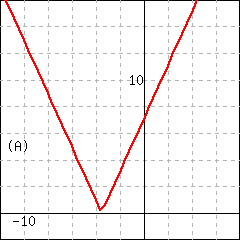

Section 5.6 Functions as Models
Subsection The Shape of the Graph
To create a good model we first decide what kind of function to use. What sort of function has the right shape to describe the process we want to model? Should it be increasing or decreasing, or some combination of both? Is the slope constant or is it changing?
In Examples 5.82 and 5.84, we investigate how the shape of a graph illustrates the nature of the process it models.
Example 5.82.
Forrest leaves his house to go to school. For each of the following situations, sketch a possible graph of Forrest's distance from home as a function of time.
Forrest walks at a constant speed until he reaches the bus stop.
Forrest walks at a constant speed until he reaches the bus stop; then he waits there until the bus arrives.
Forrest walks at a constant speed until he reaches the bus stop, waits there until the bus arrives, and then the bus drives him to school at a constant speed.
-
The graph is a straight-line segment, as shown in figure (a). It begins at the origin because at the instant Forrest leaves the house, his distance from home is 0. (In other words, when \(t = 0, y = 0\text{.}\)) The graph is a straight line because Forrest has a constant speed. The slope of the line is equal to Forrest’s walking speed.

The first part of the graph is the same as part (a). But while Forrest waits for the bus, his distance from home remains constant, so the graph at that time is a horizontal line, as shown in figure (b). The line has slope \(0\) because while Forrest is waiting for the bus, his speed is \(0\text{.}\)
The graph begins like the graph in part (b). The last section of the graph represents the bus ride. It has a constant slope because the bus is moving at a constant speed. Because the bus (probably) moves faster than Forrest walks, the slope of this segment is greater than the slope for the walking section. The graph is shown in figure (c).
Checkpoint 5.83. Practice 1.
Erin walks from her home to a convenience store, where she buys some cat food, and then walks back home. Sketch a possible graph of her distance from home as a function of time.


The graph of Erin’s distance from home is
(A)
(B)
(C)
(D)
none of the above

The graphs in Example 5.82 are portions of straight lines. We can also consider graphs that bend upward or downward. The bend is called the concavity of the graph.
Example 5.84.
The two functions described in this example are both increasing functions, but they increase in different ways. Match each function to its graph and to the appropriate table of values.
The number of flu cases reported at an urban medical center during an epidemic is an increasing function of time, and it is growing at a faster and faster rate.
The temperature of a potato placed in a hot oven increases rapidly at first, then more slowly as it approaches the temperature of the oven.
\((1)\)
| \(x\) | \(0\) | \(2\) | \(5\) | \(10\) | \(15\) |
| \(y\) | \(70\) | \(89\) | \(123\) | \(217\) | \(383\) |
\((2)\)
| \(x\) | \(0\) | \(2\) | \(5\) | \(10\) | \(15\) |
| \(y\) | \(70\) | \(219\) | \(341\) | \(419\) | \(441\) |

-
The number of flu cases is described by graph(A) and table (1). The function values in table (1) increase at an increasing rate. We can see this by computing the rate of change over successive time intervals.
\begin{gather*} x = 0 \text{ to } x = 5: ~~~~~~~~m = \frac{\Delta y}{\Delta x}=\frac{123-70}{5-0} = 10.6\\ \\ x = 5\text{ to } x = 10:~~~~~~~~ m = \frac{\Delta y}{\Delta x}=\frac{217-123}{10-5} = 18.8\\ \\ x = 10 \text{ to } x = 15:~~~~~~~~m = \frac{\Delta y}{\Delta x} =\frac{383 - 217}{15 - 10} = 33.2 \end{gather*}The increasing rates can be seen inthe figure below; the graph bends upward as the slopes increase.

-
The temperature of the potato is described by graph(B) and table (2). The function values in table (2) increase, but at a decreasing rate.
\begin{gather*} x = 0\text { to } x = 5:~~~~~~~~m =\frac{\Delta y}{\Delta x}=\frac{341-70}{5 - 0}= 54.2\\ \\ x = 5 \text{ to } x = 10:~~~~~~~~m =\frac{\Delta y}{\Delta x}=\frac{419 - 341}{10 - 5}= 15.6\\ \\ x = 10 \text{ to } x = 15:~~~~~~~~m =\frac{\Delta y}{\Delta x}=\frac{441 - 419}{15 - 10}= 4.4 \end{gather*}The decreasing slopes can be seen in the figure below. The graph is increasing but bends downward.

A graph that bends upward is called concave up, and one that bends down is concave down.
Checkpoint 5.85. Practice 2.

Francine bought a cup of cocoa at the cafeteria. The cocoa cooled off rapidly at first, and then gradually approached room temperature. Which graph more accurately reflects the temperature of the cocoa as a function of time?
(a)
(b)
Explain why. (Select all that apply.)
The graph has a steep negative slope at first, corresponding to an initial rapid drop in the temperature of the cocoa.
Yes
No
The graph becomes closer to a horizontal line, corresponding to the cocoa approaching room temperature.
Yes
No
The graph has a slight negative slope at first, corresponding to an initial rapid drop in the temperature of the cocoa.
Yes
No
The graph becomes grows steeper and steeper, corresponding to the cocoa approaching room temperature.
Yes
No
Is the graph you chose concave up or concave down?
Concave up
Concave down
\(\text{(a)}\)
\(\text{Yes}\)
\(\text{Yes}\)
\(\text{No}\)
\(\text{No}\)
\(\text{Concave up}\)
Graph (a): The graph has a steep negative slope at first, corresponding to an initial rapid drop in the temperature of the cocoa. The graph becomes closer to a horizontal line, corresponding to the cocoa approaching room temperature. The graph is concave up.
Checkpoint 5.86. QuickCheck 1.
Match each type of graph with its properties.
Increasing, concave up
i
ii
iii
iv
Increasing, concave down
i
ii
iii
iv
Decreasing, concave up
i
ii
iii
iv
Decreasing, concave down
i
ii
iii
iv
\(y\)-values decrease, slopes decrease
\(y\)-values decrease, slopes increase
\(y\)-values increase, slopes decrease
\(y\)-values increase, slopes increase
Subsection Using the Basic Functions as Models
We have considered situations that can be modeled by linear or quadratic functions. In this section we'll look at a few of the other basic functions.
Example 5.87.
Choose one of the eight basic functions to model each situation, and sketch a possible graph.
The number of board-feet, \(B\text{,}\) that can be cut from a Ponderosa pine is a function of the cube of the circumference, \(c\text{,}\) of the tree at a standard height.
The manager of an appliance store must decide how many coffee-makers to order every quarter. The optimal order size, \(Q\text{,}\) is a function of the square root of the annual demand for coffee-makers, \(D\text{.}\)
The loudness, or intensity, \(I\text{,}\) of the music at a concert is a function of the reciprocal of the square of your distance, \(d\text{,}\) from the speakers.
-
\(\displaystyle B=kc^3\)

-
\(\displaystyle Q=k\sqrt{D}\)

-
\(\displaystyle I=\dfrac{k}{d^2}\)

Checkpoint 5.88. QuickCheck 2.
Checkpoint 5.89. Practice 3.
Graphs of the eight basic functions: Eight basic graphs
Choose one of the eight basic functions to model each situation, and sketch a possible graph.
-
The contractor for a new hotel is estimating the cost of the marble tile for a circular lobby. The cost, \(C\text{,}\) is a function of the square of the diameter, \(D\text{,}\) of the lobby.
Basic function:
quadratic
cubic
square root
cube root
reciprocal
inverse square
linear
absolute value
-
Investors are deciding whether to support a windmill farm. The wind speed, \(v\text{,}\) needed to generate a given amount of power is a function of the cube root of the power, \(P\text{.}\)
Basic function:
quadratic
cubic
square root
cube root
reciprocal
inverse square
linear
absolute value
-
The frequency, \(F\text{,}\) of the note produced by a violin string is a function of the reciprocal of the length, \(L\text{,}\) of the string.
Basic function:
quadratic
cubic
square root
cube root
reciprocal
inverse square
linear
absolute value


The next Example illustrates an application of the function \(f(x)=\sqrt{x}\text{.}\)
Example 5.90.
The speed of sound is a function of the temperature of the air in kelvins. (The temperature, \(T\text{,}\) in kelvins is given by \(T = C + 273\text{,}\) where \(C\) is the temperature in degrees Celsius.) The table shows the speed of sound, \(s\text{,}\) in meters per second, at various temperatures, \(T\text{.}\)
| \(T ~ (\degree K)\) | \(0\) | \(20\) | \(50\) | \(100\) | \(200\) | \(400\) |
| \(T ~ (\text{m/sec})\) | \(0\) | \(89.7\) | \(141.8\) | \(200.6\) | \(283.7\) | \(401.2\) |
Plot the data to obtain a graph. Which of the basic functions does your graph most resemble?
Find a value of \(k\) so that \(s = kf(T)\) fits the data.
On a summer night when the temperature is \(20\degree\) Celsius, you see a flash of lightning, and 6 seconds later you hear the thunderclap. Use your function to estimate your distance from the thunderstorm.
-
The graph of the data is shown below. The shape of the graph reminds us of the square root function, \(y = \sqrt{x}\text{.}\)

We are looking for a value of \(k\) so that the function \(f(T) = k \sqrt{T}\) fits the data. We substitute one of the data points into the formula and solve for \(k\text{.}\) If we choose the point \((100, 200.6)\text{,}\) we obtain
\begin{equation*} 200.6 = k \sqrt{100} \end{equation*}and solving for \(k\) yields \(k = 20.06\text{.}\) We can check that the formula \(s = 20.06 \sqrt{T} \) is a good fit for the rest of the data points as well. Thus, we suggest the function\begin{equation*} f (T) = 20.06\sqrt{T} \end{equation*}as a model for the speed of sound.-
First, we use the model to calculate the speed of sound at a temperature of \(20\degree\) Celsius. The Kelvin temperature is
\begin{equation*} T = 20 + 273 = 293 \end{equation*}so we evaluate \(s = f (T )\) for \(T = 293\text{.}\)
\begin{equation*} f (293) = 20.06\sqrt{293}\approx 343.4 \end{equation*}Thus, \(s\) is approximately 343.4 meters per second.
The lightning and the thunderclap occur simultaneously, and the speed of light is so fast (about 30,000,000 meters per second) that we see the lightning flash as it occurs. So if the sound of the thunderclap takes \(6\) seconds after the flash to reach us, we can use our calculated speed of sound to find our distance from the storm.
\begin{align*} \text{distance} \amp= \text{speed} \times \text{time}\\ \amp = (343.4\text{ m/sec}) (6 \text{ sec}) = 2060.4 \text{ meters} \end{align*}The thunderstorm is 2060 meters, or about 1.3 miles, away.
Checkpoint 5.91. Practice 4.
The ultraviolet index (UVI) is issued by the National Weather Service as a forecast of the amount of ultraviolet radiation expected to reach Earth around noon on a given day. The data show how much exposure to the sun people can take before risking sunburn.
| UVI | \(2\) | \(3\) | \(4\) | \(5\) | \(6\) | \(8\) | \(10\) | \(12\) |
| Minutes to burn (more sensitive) | \(30\) | \(20\) | \(15\) | \(12\) | \(10\) | \(7.5\) | \(6\) | \(5\) |
| Minutes to burn (more sensitive) | \(150\) | \(100\) | \(75\) | \(60\) | \(50\) | \(37.5\) | \(30\) | \(25\) |
-
Plot \(m\text{,}\) the minutes to burn, against \(u\text{,}\) the UVI, to obtain two graphs, one for people who are more sensitive to sunburn, and another for people less sensitive to sunburn. Which of the basic functions do your graphs most resemble?
\(\displaystyle y= x^2 \)
\(\displaystyle y= x^3 \)
\(\displaystyle y= \sqrt{x} \)
\(\displaystyle y= \sqrt[3]{x} \)
\(\displaystyle y= \frac{1}{x} \)
\(\displaystyle y= \frac{1}{x^2} \)
\(\displaystyle y= x \)
\(\displaystyle y= \left| x\right|\)
-
For each graph, find a value of \(k\) so that \(m = k f(u)\) fits the data.
More sensitive: \(k=\)
Less sensitive: \(k=\)

Checkpoint 5.92. QuickCheck 3.
At this point, a word of caution is in order. There is more to choosing a model than finding a curve that fits the data. A model based purely on the data is called an empirical model. However, many functions have similar shapes over small intervals of their input variables, and there may be several candidates that model the data. Such a model simply describes the general shape of the data set; the parameters of the model do not necessarily correspond to any actual process.
In contrast, mechanistic models provide insight into the biological, chemical, or physical process that is thought to govern the phenomenon under study. Parameters derived from mechanistic models are quantitative estimates of real system properties. Here is what GraphPad Software has to say about modeling:
"Choosing a model is a scientific decision. You should base your choice on your understanding of chemistry or physiology (or genetics, etc.). The choice should not be based solely on the shape of the graph.
"Some programs . . . automatically fit data to hundreds or thousands of equations and then present you with the equation(s) that fit the data best. Using such a program is appealing because it frees you from the need to choose an equation. The problem is that the program has no understanding of the scientific context of your experiment. The equations that fit the data best are unlikely to correspond to scientifically meaningful models. You will not be able to interpret the best-fit values of the variables, and the results are unlikely to be useful for data analysis."
(Source: Fitting Models to Biological Data Using Linear and Nonlinear Regression, Motulsky & Christopoulos, GraphPad Software, 2003)
Subsection The Absolute Value and Distance
The absolute value function is used to model problems involving distance. Recall that the absolute value of a number gives the distance from the origin to that number on the number line.
Checkpoint 5.93. QuickCheck 4.
We can find the distance from a number \(x\) to some point other than the origin, say \(a\text{,}\) by computing \(\abs{x - a}\text{.}\) For instance, the distance on the number line from \(x=-2\) to \(a=5\) is
Distance and Absolute Value.
The distance between two points \(x\) and \(a\) is given by \(\abs{x - a}\text{.}\)
For example, the equation \(\abs{x - 2} = 6\) means "the distance between \(x\) and \(2\) is \(6\) units." The number \(x\) could be to the left or the right of \(2\) on the number line. Thus, the equation has two solutions, \(8\) and \(-4\text{,}\) as shown below.

Example 5.94.
Write each statement using absolute value notation. Illustrate the solutions on a number line.
\(x\) is three units from the origin.
\(p\) is two units from \(5\text{.}\)
\(a\) is within four units of \(-2\text{.}\)
First, we restate each statement in terms of distance.
-
The distance between \(x\) and the origin is three units, or \(\abs{x} = 3\text{.}\) Thus, \(x\) can be \(3\) or \(-3\text{.}\)

-
The distance between \(p\) and \(5\) is two units, or \(\abs{p - 5} = 2\text{.}\) If we count two units on either side of \(5\text{,}\) we see that \(p\) can be \(3\) or \(7\text{.}\)

-
The distance between \(a\) and \(-2\) is less than four units, or \(\abs{a - (-2)} \lt 4\text{,}\) or \(\abs{a + 2} \lt 4\text{.}\) Count four units on either side of \(-2\text{,}\) to find \(-6\) and \(2\text{.}\) Then \(a\) is between \(-6\) and \(2\text{,}\) or \(-6 \lt a \lt 2\text{.}\)

Checkpoint 5.95. QuickCheck 5.
Checkpoint 5.96. Practice 5.
Write each statement using absolute value notation; then illustrate the solutions on a number line.
-
\(x\) is five units away from \(-3\text{.}\)
\(=\)
-
\(x\) is at least six units away from \(4\text{.}\)
\(\ge\)


Subsection Absolute Value Equations
A graph can help us analyze an absolute value equation. For example, we know that the simple equation \(\abs{x} = 5\) has two solutions, \(x = 5\) and \(x = -5\text{.}\)
In fact, we can see from the graph at right that the equation \(\abs{x} = k\) has two solutions if \(k \gt 0\text{,}\) one solution if \(k = 0\text{,}\) and no solution if \(k \lt 0\text{.}\)

Checkpoint 5.97. QuickCheck 6.
Which statement is true?
The graph of \(y=|2x-8|\) has no negative inputs.
The equation \(|2x-8|=-4\) has two solutions.
Depending on \(x,~|2x-8|\) can equal \(2x-8\) or \(8-2x\text{.}\)
The graph of \(y=|2x-8|\) is a straight line.
Example 5.98.
Use a graph of \(y = \abs{3x - 6}\) to solve the equation \(\abs{3x - 6} = 9\text{.}\)
Use a graph of \(y = \abs{3x - 6}\) to solve the equation \(\abs{3x - 6} = -2\text{.}\)

-
The graph shows the graphs of \(y = \abs{3x - 6}\) and \(y = 9\text{.}\) We see that there are two points on the graph of \(y = \abs{3x - 6}\) that have \(y = 9\text{,}\) and those points have \(x\)-coordinates \(x = -1\) and \(x = 5\text{.}\) We can verify algebraically that the solutions are \(-1\) and \(5\text{.}\)
\begin{align*} x \amp = \alert{-1}\text{: }\\ ~ ~ \abs{3(\alert{-1}) - 6} = \abs{-9} = 9\\ x \amp = \alert{5}\text{: }\\ ~ ~ \abs{3(\alert{5}) - 6} = \abs{9} = 9 \end{align*} There are no points on the graph of \(y = \abs{3x - 6}\) with \(y = -2\text{,}\) so the equation \(\abs{3x - 6} = -2\) has no solutions.
Technology 5.99. Solving Absolute Value Equations.
We can use a graphing calculator to solve the equations in Example 5.98.
The graph shows the graphs of \(Y_1 = \text{abs}(3X - 6)\) and \(Y_2 = 9\) in the window
We use the Trace or the intersect feature to locate the intersection points at \((-1, 9)\) and \((5, 9)\text{.}\)

Checkpoint 5.100. Practice 6.
-
Graph \(y = |2x + 7|\) for \(-12 \le x \le 8\text{.}\)



The graph of \(y= |2x+7|\) is
(A)
(B)
(C)
(D)
none of the above
-
Use your graph to solve the equation \(|2x + 7| = 11\text{.}\)
\(x=\)

To solve an absolute value equation algebraically, we use the definition of absolute value.
Example 5.101.
Solve the equation \(\abs{3x - 6} = 9\) algebraically.
We write the piecewise definition of \(\abs{3x - 6}\text{.}\)
Thus, the absolute value equation \(\abs{3x - 6} = 9\) is equivalent to two regular equations:
or, by simplifying the second equation,
Solving these two equations gives us the same solutions we found in Example 5.98, namely \(x = 5\) and \(-1\text{.}\)
In general, we have the following strategy for solving absolute value equations.
Absolute Value Equations.
The equation
is equivalent to
Checkpoint 5.102. Practice 7.
Subsection Absolute Value Inequalities
We can also use graphs to solve absolute value inequalities. Look again at the graph of \(y = \abs{3x - 6}\) in figure (a) below.

Because of the V-shape of the graph, all points with \(y\)-values less than \(9\) lie between the two solutions of \(~\abs{3x - 6} = 9~\text{,}\) that is, between \(-1\) and \(5\text{.}\) Thus, the solutions of the inequality \(~\abs{3x - 6} \lt 9~\) are \(-1 \lt x \lt 5\text{.}\)
On the other hand, to solve the inequality \(~\abs{3x - 6} \gt 9~\text{,}\) we look for points on the graph with \(y\)-values greater than \(9\text{.}\) In figure (b), we see that these points have \(x\)-values outside the interval between \(-1\) and \(5\text{.}\) In other words, the solutions of the inequality \(~\abs{3x - 6} \gt 9~\) are \(x \lt -1\) or \(x \gt 5\text{.}\)
Thus, we can solve an absolute value inequality by first solving the related equation.
Absolute Value Inequalities.
Suppose the solutions of the equation \(\abs{ax+b}=c\) are \(r\) and \(s\text{,}\) with \(r \lt s\text{.}\) Then
The solutions of \(~\abs{ax+b} \lt c~\) are
\begin{equation*} r \lt x \lt s \end{equation*}The solutions of \(~\abs{ax+b} \gt c~\) are
\begin{equation*} x \lt r ~~\text{ or }~~ x \gt s \end{equation*}
Checkpoint 5.103. QuickCheck 8.
Example 5.104.
Solve \(~\abs{4x - 15} \lt 0.01\)
First, we solve the equation \(~\abs{4x - 15} = 0.01\text{.}\) There are two cases:
Because the inequality symbol is \(\lt\text{,}\) the solutions of the inequality are between these two values: \(3.7475 \lt x \lt 3.7525\text{.}\) In interval notation, the solutions are \((3.7475, 3.7525)\text{.}\)
Checkpoint 5.105. Practice 8.
Exercises Problem Set 5.6
Warm Up
Exercise Group.
In Problems 1–6, state the intervals (if any) on which the function is
increasing and concave up
increasing and concave down
decreasing and concave up
decreasing and concave down
Give your answers in interval notation.
1.
\(f(x)=x^2\)
2.
\(f(x)=x^3\)
3.
\(f(x)=\sqrt{x}\)
4.
\(f(x)=\sqrt[3]{x}\)
5.
\(f(x)=\dfrac{1}{x}\)
6.
\(f(x)=\dfrac{1}{x^2}\)
Skills Practice
7.
The graph defines a function, \(h\text{,}\) that shows the height, \(s\text{,}\) in meters, of a duck \(t\) seconds after it is flushed out of the bushes.

Use function notation to state that \(s\) is a function of \(t\text{.}\)
What does the statement \(h(3)=7\) mean in this context?
8.
The graph defines a function, \(f\text{,}\) that shows the atmospheric pressure, \(P\text{,}\) in inches of mercury, at an altitude of \(a\) feet.

Use function notation to state that \(P\) is a function of \(a\text{.}\)
What does the statement \(f(1500)=28.3\) mean in this context?
Exercise Group.
In Problems 9 and 10, use the table of values to answer the questions.
Based on the given values, is the function increasing or decreasing?
Could the function be concave up, concave down, or linear?
9.
| \(x\) | \(0\) | \(1\) | \(2\) | \(3\) | \(4\) |
| \(f(x)\) | \(1\) | \(1.5\) | \(2.25\) | \(3.375\) | \(5.0625\) |
10.
| \(x\) | \(0\) | \(1\) | \(2\) | \(3\) | \(4\) |
| \(g(x)\) | \(1\) | \(0.8\) | \(0.64\) | \(0.512\) | \(0.4096\) |
Exercise Group.
For Problems 11 and 12, plot the data; then decide which of the basic functions could describe the data.
11.
| \(~x~\) | \(0.5\) | \(~1~\) | \(~2~\) | \(~3~\) | \(~4~\) |
| \(y\) | \(12\) | \(6\) | \(3\) | \(2\) | \(1.5\) |
12.
| \(~x~\) | \(~0~\) | \(0.5\) | \(~1~\) | \(~2~\) | \(3\) |
| \(y\) | \(0\) | \(0.0125\) | \(0.1\) | \(0.8\) | \(2.7\) |
Applications
Exercise Group.
In Problems 13–16, which graph best illustrates each of the following situations?
13.
Your pulse rate during an aerobics class

14.
The stopping distances for cars traveling at various speeds

15.
Your income in terms of the number of hours you worked

16.
Your temperature during an illness

Exercise Group.
Choose the graph that depicts the function described in Problems 17 and 18.
17.
Inflation is still rising, but by less each month.

18.
The price of wheat was rising more rapidly in 1996 than at any time during the previous decade.

Exercise Group.
In Problems 19 and 20, match each graph with the function it illustrates.
19.
The volume of a cylindrical container of constant height as a function of its radius
The time it takes to travel a fixed distance as a function of average speed
The simple interest earned at a given interest rate as a function of the investment
The number of Senators present versus the number absent in the U.S. Senate

20.
Unemployment was falling but is now steady.
Inflation, which rose slowly until last month, is now rising rapidly.
The birthrate rose steadily until 1990 but is now beginning to fall.
The price of gasoline has fallen steadily over the past few months.

Exercise Group.
Each situation in Problems 21–26 can be modeled by a transformation of a basic function. Name the basic function and sketch a possible graph.
21.
The volume of a hot air balloon, as a function of its radius
22.
The length of a rectangle as a function of its width, if its area is 24 square feet
23.
The time it takes you to travel 600 miles, as a function of your average speed
24.
The sales tax on a purchase, as a function of its price
25.
The width of a square skylight, as a function of its area
26.
The sales tax on a purchase, as a function of its price
27.
Four different functions are described below. Match each description with the appropriate table of values and with its graph.
As a chemical pollutant pours into a lake, its concentration is a function of time. The concentration of the pollutant initially increases quite rapidly, but due to the natural mixing and self-cleansing action of the lake, the concentration levels off and stabilizes at some saturation level.
An overnight express train travels at a constant speed across the Great Plains. The train's distance from its point of origin is a function of time.
The population of a small suburb of a Florida city is a function of time. The population began increasing rather slowly, but it has continued to grow at a faster and faster rate.
The level of production at a manufacturing plant is a function of capital outlay, that is, the amount of money invested in the plant. At first, small increases in capital outlay result in large increases in production, but eventually the investors begin to experience diminishing returns on their money, so that although production continues to increase, it is at a disappointingly slow rate.
\(~x~\) \(~1~\) \(~2~\) \(~3~\) \(~4~\) \(~5~\) \(~6~\) \(~7~\) \(~8~\) \(y\) \(60\) \(72\) \(86\) \(104\) \(124\) \(149\) \(179\) \(215\) \(~x~\) \(~1~\) \(~2~\) \(~3~\) \(~4~\) \(~5~\) \(~6~\) \(~7~\) \(~8~\) \(y\) \(60\) \(85\) \(103\) \(120\) \(134\) \(147\) \(159\) \(169\) \(~x~\) \(~1~\) \(~2~\) \(~3~\) \(~4~\) \(~5~\) \(~6~\) \(~7~\) \(~8~\) \(y\) \(60\) \(120\) \(180\) \(240\) \(300\) \(360\) \(420\) \(480\) \(~x~\) \(~1~\) \(~2~\) \(~3~\) \(~4~\) \(~5~\) \(~6~\) \(~7~\) \(~8~\) \(y\) \(60\) \(96\) \(118\) \(131\) \(138\) \(143\) \(146\) \(147\)

28.
Four different functions are described below. Match each description with the appropriate table of values and with its graph.
Fresh water flowing through Crystal Lake has gradually reduced the phosphate concentration to its natural level, and it is now stable.
The number of bacteria in a person during the course of an illness is a function of time. It increases rapidly at first, then decreases slowly as the patient recovers.
A squirrel drops a pine cone from the top of a California redwood. The height of the pine cone is a function of time, decreasing ever more rapidly as gravity accelerates its descent.
Enrollment in Ginny's Weight Reduction program is a function of time. It began declining last fall. After the holidays, enrollment stabilized for a while but soon began to fall off again.
\(~x~\) \(~0~\) \(~1~\) \(~2~\) \(~3~\) \(~4~\) \(y\) \(160\) \(144\) \(96\) \(16\) \(0\) \(~x~\) \(~0~\) \(~1~\) \(~2~\) \(~3~\) \(~4~\) \(y\) \(20\) \(560\) \(230\) \(90\) \(30\) \(~x~\) \(~0~\) \(~1~\) \(~2~\) \(~3~\) \(~4~\) \(y\) \(480\) \(340\) \(240\) \(160\) \(120\) \(~x~\) \(~0~\) \(~1~\) \(~2~\) \(~3~\) \(~4~\) \(y\) \(250\) \(180\) \(170\) \(150\) \(80\)

29.
The table shows the radii, \(r\text{,}\) of several gold coins, in centimeters, and their value, \(v\text{,}\) in dollars.
| Radius | \(0.5\) | \(1\) | \(1.5\) | \(2\) | \(2.5\) |
| Value | \(200\) | \(800\) | \(1800\) | \(3200\) | \(5000\) |
-
Which graph represents the data?

-
Which equation describes the function?
\(\displaystyle v=k\sqrt{r} \)
\(\displaystyle v=kr\)
\(\displaystyle v=kr^2\)
\(\displaystyle v=\dfrac{k}{r} \)
30.
The table shows how the amount of water, \(A\text{,}\) flowing past a point on a river is related to the width, \(W\text{,}\) of the river at that point.
| Width (feet) | \(11\) | \(23\) | \(34\) | \(46\) |
| Amount of water \(\text{(ft}^3/\text{sec)} \) |
\(23\) | \(34\) | \(41\) | \(47\) |
-
Which graph represents the data?

-
Which equation describes the function?
\(\displaystyle A=k\sqrt{W} \)
\(\displaystyle A=kW\)
\(\displaystyle A=kW^2\)
\(\displaystyle A=\dfrac{k}{W} \)
31.
As the global population increases, many scientists believe it is approaching, or has already exceeded, the maximum number the Earth can sustain. This maximum number, or carrying capacity, depends on the finite natural resources of the planet -- water, land, air, and materials -- but also on how people use and preserve the resources. The graphs show four different ways that a growing population can approach its carrying capacity over time. (Source: Meadows, Randers, and Meadows, 2004)

Match each graph to one of the scenarios described in (a)-(d), and explain your choice.
Sigmoid growth: the population levels off smoothly below the carrying capacity.
Overshoot and collapse: the population exceeds the carrying capacity with severe damage to the resource base, and is forced to decline rapidly to achieve a new balance with a reduced carrying capacity.
Continued growth: the carrying capacity is far away, or growing faster than the population.
Overshoot and oscillation: the population exceeds the carrying capacity without inflicting permanent damage, then oscillates around the limit before leveling off.
Absolute Value
Exercise Group.
In Problems 1–8,
Use absolute value notation to write each expression as an equation or an inequality. (It may be helpful to restate each sentence using the word distance.)
Illustrate the solutions on a number line.
1.
\(x\) is six units from the origin.
2.
\(a\) is seven units from the origin.
3.
The distance from \(p\) to \(-3\) is five units.
4.
The distance from \(q\) to \(-7\) is two units.
5.
\(t\) is within three units of \(6\text{.}\)
6.
\(w\) is no more than one unit from \(-5\text{.}\)
7.
\(b\) is at least \(0.5\) unit from \(-1\text{.}\)
8.
\(m\) is more than \(0.1\) unit from \(8\text{.}\)
9.
Graph \(y = \abs{x + 3}\text{.}\) Use your graph to solve the following equations and inequalities.
\(\displaystyle \abs{x + 3} = 2 \)
\(\displaystyle \abs{x+3}\le 4 \)
\(\displaystyle \abs{x+3}\gt 5 \)
10.
Graph \(y = \abs{x -2}\text{.}\) Use your graph to solve the following equations and inequalities.
\(\displaystyle \abs{x-2} = 5 \)
\(\displaystyle \abs{x-2}\lt 8 \)
\(\displaystyle \abs{x-2}\ge 4 \)
11.
Graph \(y = \abs{2x-8}\text{.}\) Use your graph to solve the following equations and inequalities.
\(\displaystyle \abs{2x-8} = 0 \)
\(\displaystyle \abs{2x-8}=-2 \)
\(\displaystyle \abs{2x-8}\lt -6 \)
12.
Graph \(y = \abs{4x+8}\text{.}\) Use your graph to solve the following equations and inequalities.
\(\displaystyle \abs{4x+8} = 0 \)
\(\displaystyle \abs{4x+8}\lt 0 \)
\(\displaystyle \abs{4x+8}\gt -3 \)
Exercise Group.
For Problems 13-24, solve.
13.
\(\abs{2x-1}=4 \)
14.
\(\abs{3x-1}=5 \)
15.
\(0=\abs{7+3q} \)
16.
\(\abs{-11-5t}=0 \)
17.
\(4=\dfrac{\abs{b+2}}{3} \)
18.
\(6\abs{n+2}=9 \)
19.
\(\abs{2(w-7)}=1 \)
20.
\(2=\abs{\dfrac{a-4}{5}} \)
21.
\(\abs{c-2}+3=1 \)
22.
\(5=4-\abs{h+3} \)
23.
\(-7=\abs{2m+3} \)
24.
\(\abs{5r-3}=-2 \)
Exercise Group.
For Problems 25-36, solve.
25.
\(\abs{2x+6}\lt 3 \)
26.
\(\abs{5-3x}\le 1 \)
27.
\(7\le \abs{3-2d} \)
28.
\(10 \lt \abs{3r+2} \)
29.
\(\abs{6s+15}\gt -3 \)
30.
\(\abs{8b-12}\lt -4 \)
31.
\(\abs{t-1.5}\lt 0.1 \)
32.
\(\abs{z-2.6}\le 0.1 \)
33.
\(\abs{T-3.25}\ge 0.05 \)
34.
\(\abs{P-0.6}\gt 0.01 \)
35.
\(-1\ge \abs{\dfrac{n-3}{2}} \)
36.
\(-0.1\le \abs{9(p+2)} \)